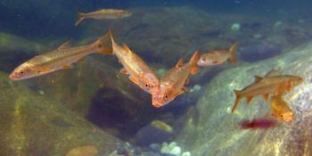

|  |
Our newly published paper in Conservation Letters was featured in the UCANR Blog "The Confluence". The full paper can be found here: Grantham, T., K. Fesenmyer, R. Peek, E. Holmes, A. Bell, R. Quiñones, N. Santos, J. Howard, J. Viers, and P. Moyle. 2016. Missing the boat on freshwater fish conservation in California. Conservation Letters DOI: 10.1111/conl.12249. |
|---|